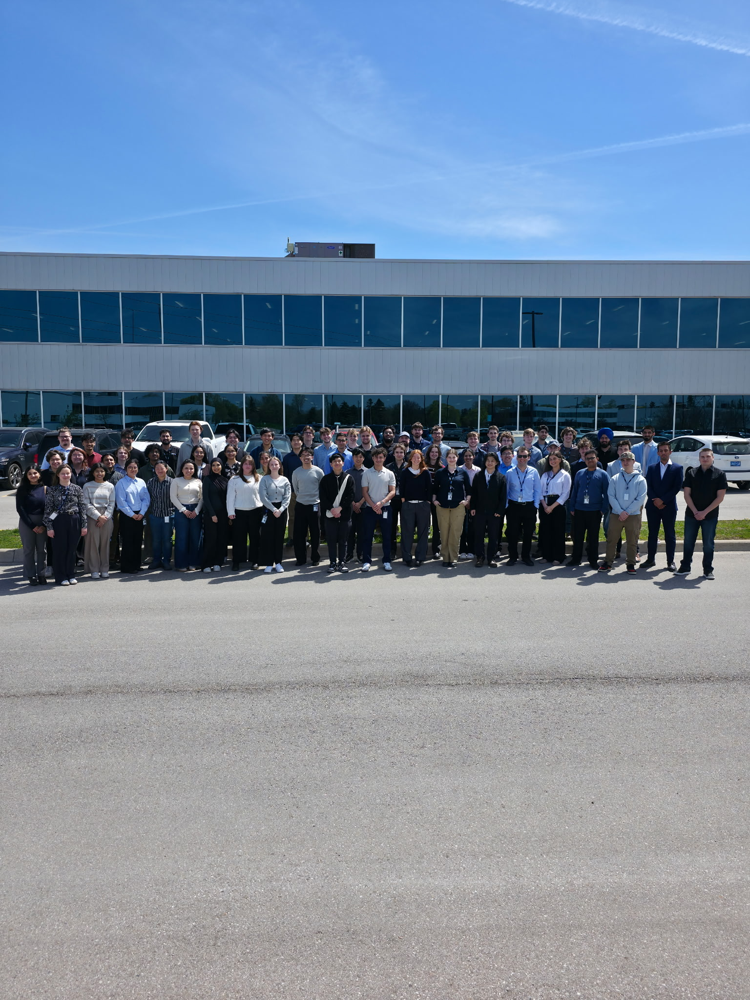
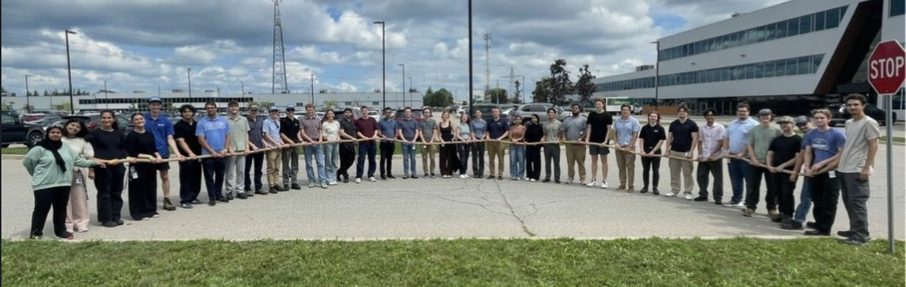
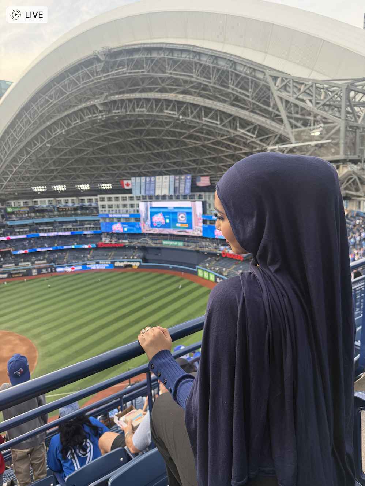
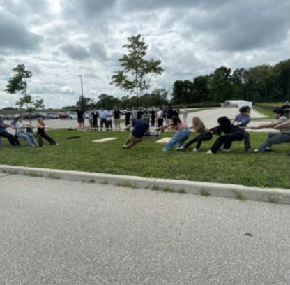
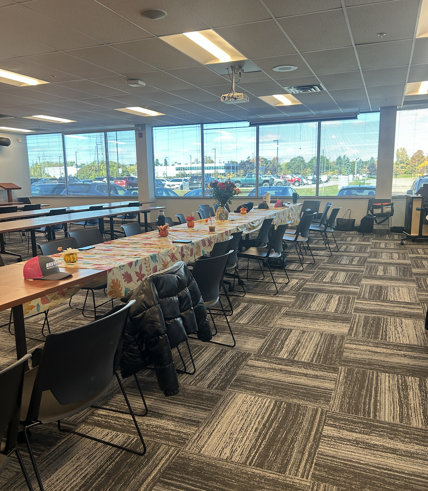
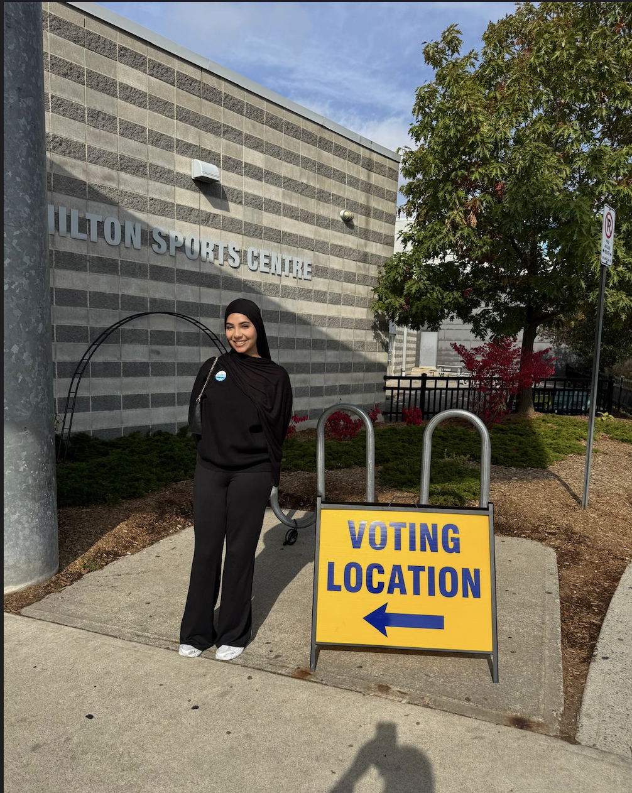
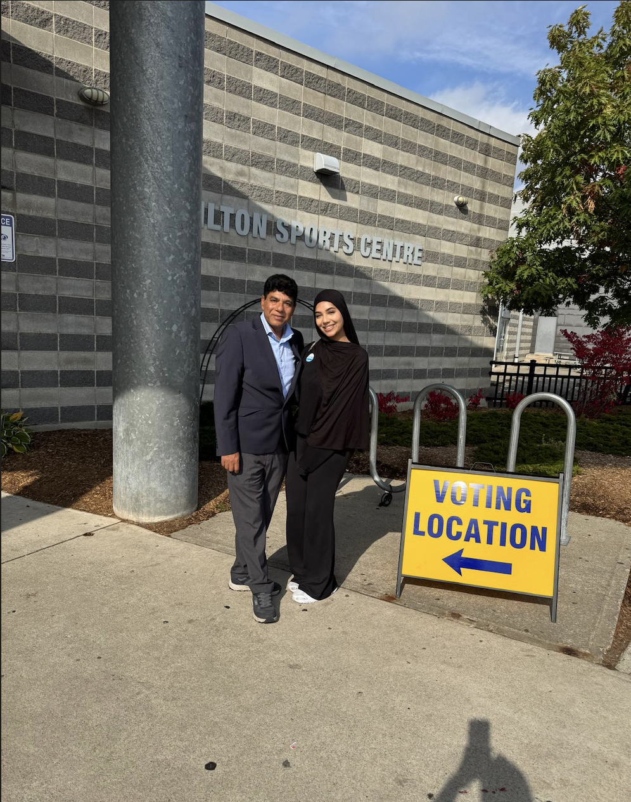

An incredible journey at ATS, highlighting my professional accomplishments, personal growth, and contributions beyond the workplace.

This portfolio reflects on my co-op placement at ATS Corporation, spanning from May 2026 to
December 2026. The Fall 2026 term allowed me to build on my earlier experience, take greater
ownership of my work, and continue contributing to meaningful projects,
all while growing both personally and professionally. From developing pricing and quoting solutions
to supporting enterprise operations, my experience strengthened my
confidence, independence, and appreciation for the impact of my work.
During my eight-month placement, I worked as a Toolset Software Developer within ATS Corporation's Cambridge Life Sciences division. As part of the Parts & Services department, I focused on developing and improving pricing and quoting solutions, supporting enterprise resource planning (ERP) processes, and resolving technical challenges. My role allowed me to apply my computer science knowledge to real business operations while strengthening my skills in software development, problem-solving, and data integrity.
ATS Corporation is a global automation and technology company serving industries including life sciences, food and beverage, transportation, energy, and consumer products. I completed my placement within its Cambridge Life Sciences division, where the Parts & Services department supports customer quoting, pricing, order management, and spare parts operations. Working in this environment gave me valuable insight into how technical systems support business processes across different departments and international branches.
My primary project involved developing and deploying an offline Excel-based pricing and quoting tool for the Parts & Services department, replacing the previous Configure, Price, Quote (CPQ) system. I developed and tested formulas to automate gross margin, markup, and currency conversion calculations across ten part classification categories for ATS Ohio and Cambridge Life Sciences. Beyond this project, I investigated pricing discrepancies within JD Edwards (JDE), resolved formula issues, and created technical documentation to support colleagues in navigating enterprise processes.
Beyond my daily responsibilities, I made an effort to stay involved in the ATS workplace community despite working remotely. Through the ATS Social Club and events organized by the Co-op Committee, I had opportunities to connect with fellow co-op students and colleagues. From the Co-op Olympic Games and Thanksgiving lunch to a Blue Jays game and a Parts & Services bowling event, these experiences made my placement even more memorable.




Throughout my placement, I gained hands-on experience with enterprise systems, data analysis tools, and documentation software. These technologies allowed me to develop practical solutions, improve existing processes, and communicate technical information effectively.
I worked with JD Edwards (JDE), CPQ, and Oracle-based applications to support pricing, quoting, and order management processes. I also explored Orchestrator Studio to develop workflows for notifications and approvals, gaining experience with enterprise systems from both a technical and operational perspective.
I used Databricks to analyze order data and Excel to develop, test, and refine pricing formulas. My work involved automating calculations for gross margins, markups, currency conversions, and part classifications to support consistent quoting processes across ATS branches.
I used OneNote, Word, PowerPoint, and Snagit to create technical documentation, step-by-step tutorials, flowcharts, and visual guides. I also prepared demonstrations and presentations to explain my work, gather feedback, and help colleagues understand new pricing tools and processes.
Outside of my co-op placement, I continued contributing to my community through volunteering, supporting local initiatives, and maintaining personal interests.
Provided free weekly virtual math tutoring to high school and university students, helping them strengthen their understanding and confidence in subjects such as Functions and Calculus.
Supported local municipal election campaigns through community outreach, voting-day reminders, door-to-door canvassing, and organizing neighbourhood outreach data in Excel.
Volunteered with the Halton Islamic Community Centre during Ramadan, supporting community initiatives including carpool services, charity and donations, and Quran exchanges.
Stayed active through strength training and group fitness classes at GoodLife Fitness, making time for personal interests alongside my academic and professional commitments.


My eight-month co-op experience at ATS allowed me to grow both technically and professionally while gaining a greater sense of confidence in my abilities. One of the most rewarding parts of my placement was seeing the pricing and quoting solutions I developed become part of a system used by my team. What began as an opportunity to apply my technical knowledge became an experience in taking ownership of my work, solving real business problems, and understanding the impact of my contributions. Through presenting my ideas, receiving feedback, and refining my solutions, I became more confident in my ability to communicate, take initiative, and work independently.
Beyond developing technical skills, this experience gave me a deeper appreciation for the collaboration and problem-solving involved in a professional workplace. Working with different teams and business processes helped me understand how technology supports operations across ATS. I also learned the importance of adaptability, organization, and asking questions when approaching unfamiliar challenges. Most importantly, my placement showed me how much I enjoy contributing to meaningful projects alongside supportive colleagues. I am grateful for the opportunities, mentorship, and trust I received throughout my time at ATS, and I will carry these lessons forward into my remaining studies and future career.
As I approach the completion of my Computer Science degree
at the University of Guelph, I look forward to applying the
knowledge, skills, and confidence I gained during my
time at ATS to new opportunities and
challenges. This experience has strengthened my interest
in developing practical solutions that make a meaningful
difference, and I hope to continue building on this
foundation as I begin my professional career.
I am especially grateful for the supportive environment
and opportunities I received at ATS, and I welcome the
opportunity to return after graduation. Wherever my
career takes me, I will surely carry the lessons, relationships,
and experiences with me.